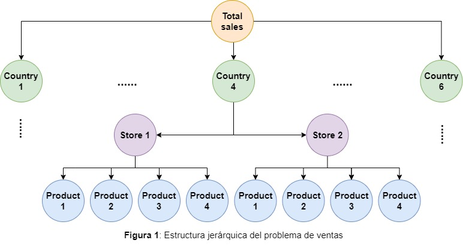

1 Introducción y Definición del Problema
1.1 Introducción
Un aspecto relevante para los tomadores de decisión es el hecho de poder tener información confiable y consistente, de tal forma que las proyecciones o valores resultantes sean razonables. Cuando se realizan proyecciones en series de tiempo, nos enfrentamos a un cojunto de elementos que debemos atacar de forma secuencial y sencillla para poder derterminar los patrones naturales que emergen de la serie, tales como tendencia, ciclicidad y estacionalidad en diversas fases. En adición, cuando observamos datos desagregados por diversas categorías anidados dentro de categorías o incluso por agrupación de categorías, nos enfrentamos a series de tiempo Jerárquicas o Jerárquicas Agrupadas.
Hemos seleccionado una base de datos simple de las librerías de Kaggle (datos artificiales) que usaremos para poder ejemplificar los temas a desarrollar.
1.2 Objetivo
Realizar una investigación general sobre los métodos actuales disponibles para resolver el problema que surge en las proyecciones de series de tiempo con datos desagregados por diversos atributos de interés, ya que buscamos consistencia y coherencia en las estimaciones tanto agregadas como desagregadas.
Implementar un caso de estudio sencillo utilizando un dataset de la librería de Kaggle que nos permita implementar las técnicas investigadas.
1.3 Planteamiento del problema
Para utilizar las técnicas discutidas en esta sección se planterá el problema de pronosticar las ventas de una empresa a lo largo de los años 2017 a 2020 con una estructura jerárquica en los datos. El conjunto de datos original cuenta con observaciones a nivel diario, sin embargo, con el fin de simplificar el problema y ejemplificar la solución de este tipo de estructuras de series temporales se optó por presentar la serie a nivel mensual.
DATABASE CLI: kaggle competitions download -c tabular-playground-series-sep-2022 Tabular Playground Series - Sep 2022
Los datos son ficiticios y fueron creados como dataset lúdico para incrementar las habilidades en los modelos de Aprendizaje de Máquina. No obstante, la estructura de diseño permite explotarlo aún más, en nuestro caso, para ejemplificar prediccines en modelos jerárquicos o agrupados. Es importante mencionar que se integraron efectos naturales de las series de tiempo como son días feriados, estacionalidad, tendencia, etc.
Básicamente, consiste en la predicción del valor de las ventas durante el año 2021 para 2 tiendas que compiten entre sí y que están localizadas en 6 distintos países de Europa actualmente.
Utilizaremos un diagrama de árbol para analizar la estructura de los datos, que consiste en series de tiempo con 3 niveles jerárquicos:
- 6 países: Belgium, France, Germany, Italy, Poland, Spain.
- 2 tipos de tienda: KaggleMart, KaggleRama.
- 4 productos: Kaggle Advanced Techniques, Kaggle for Kids: One Smart Goose, Kaggle Getting Started, Kaggle Recipe Book.

En el siguiente resumen podemos observar las características principales de nuestra información. Al ser un base de datos artificial, no encontramos problemas como desbalanceo o valores faltantes. Como se mencionó anteriormente, tenemos 6 países, 2 categorías para tienda y 4 tipos de producto distintos.
Como es usual, la siguiente tabla nos muestra las primeras observaciones de nuestros datos para poder tener una inspección rápida:
sales <- read_delim("../datos/sales.csv")
sales_m <- sales |>
mutate(t = (year(date)-year(min(date)))*12 + (month(date)-month(min(date)))) |>
mutate(date = year(date)*100+month(date)) |>
group_by(date,t,country,store,product) |>
summarise(num_sold = sum(num_sold,na.rm = TRUE))
head(sales_m) |> kable()| date | t | country | store | product | num_sold |
|---|---|---|---|---|---|
| 201701 | 0 | Belgium | KaggleMart | Kaggle Advanced Techniques | 13345 |
| 201701 | 0 | Belgium | KaggleMart | Kaggle for Kids: One Smart Goose | 13589 |
| 201701 | 0 | Belgium | KaggleMart | Kaggle Getting Started | 9807 |
| 201701 | 0 | Belgium | KaggleMart | Kaggle Recipe Book | 8429 |
| 201701 | 0 | Belgium | KaggleRama | Kaggle Advanced Techniques | 4697 |
| 201701 | 0 | Belgium | KaggleRama | Kaggle for Kids: One Smart Goose | 4722 |
Con base en lo anterior, no se tiene que realizar pre-procesamiento alguno a nuestra información. Así mismo, nuestro objetivo es el poder realizar predicciones en series de tiempo jerárquicas en datos desagregados y no inferencia sobre las variables y sus relaciones, por lo que no será implementado un análisis EDA, si no que nos enfocaremos en conocer las cualidades de nuestra serie de tiempo para el tratamiento adecuado que debe considerarse en las componentes de una serie de tiempo (tendencia, ciclididad, estacionalidad, autocorrelación) previo a realizar las predicciones y aplicar las metodologías para lograr la consistencia al predecir en el modelo agregado.